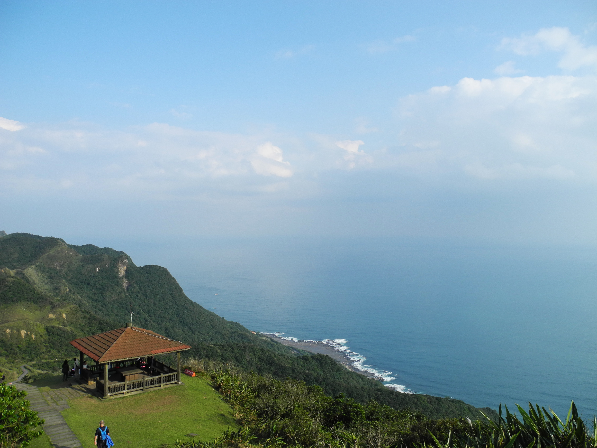

Caoling Historic Trail
The Caoling (Tsaoling) Historical Trail connects Gongliao (貢寮) with Dali (大里) on Taiwan's northeast coast. It was originally constructed in 1807 and provided an important transport link between Taipei and Yilan (the only other alternative at the time was to travel by sea). Now it is just a destination for walkers and tourists. The Taiwan Lonely Planet Guide says, "If you can only do one hike during your stay in Taiwan, make it this one".

Caoling Historic Trail
Taipei, Taiwan
8 kilometres long